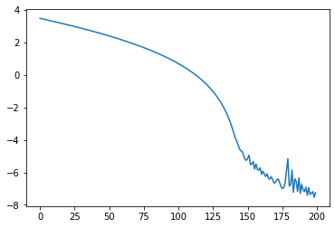
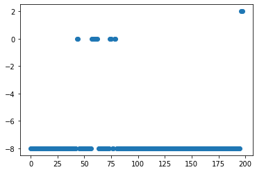

A = torch.rand(3,3)
constraint = PosDef()
posdef = constraint.transform(A)Kalman Filter
Implementation of Kalman filters using pytorch and parameter optimizations with gradient descend
Introduction
Utils
Positive Definite Constraint
transform any matrix \(A\) into a positive definite matrix (\(PD\)) using the following formula
\(PD = A A^T + aI\)
where \(AA^T\) ensures that A is positive semi-definite and adding a small positive number of the diagonal \(aI\) ensures that is definite
for details see https://stackoverflow.com/a/58192215/8555045
add also inverse transformation using cholesky decomposition
API inspired by gpytorch constraints
is_pos_semidef
is_pos_semidef (cov)
check_is_pos_semidef
check_is_pos_semidef (cov)
PosDef
PosDef (a=1e-05)
Positive Definite Constraint for PyTorch parameters
Atensor([[0.9833, 0.0952, 0.4400],
[0.1624, 0.0813, 0.7096],
[0.8946, 0.8664, 0.3925]])posdeftensor([[0.9669, 0.1597, 0.8796],
[0.1597, 0.0330, 0.2158],
[0.8796, 0.2158, 1.7051]])test_eq(torch.distributions.constraints.positive_definite.check(posdef), True)constraint.inverse_transform(posdef)tensor([[0.9833, 0.0000, 0.0000],
[0.1624, 0.0813, 0.0000],
[0.8946, 0.8664, 0.3925]])test_close(posdef, constraint.transform(constraint.inverse_transform(posdef)), eps=2e-5)torch.set_printoptions(precision=10)posdeftensor([[0.9668961763, 0.1596965045, 0.8796463013],
[0.1596965045, 0.0329905860, 0.2157533318],
[0.8796463013, 0.2157533318, 1.7050620317]])torch.isclose(posdef, posdef.mT, atol=1e-6).all(-2).all(-1)tensor(True)Symmetric
is_symmetric
is_symmetric (value, atol=1e-05)
is_symmetric(A)Falsesymmetric_upto
symmetric_upto (value, start=-8)
symmetric_upto(posdef)tensor(-8)symmetric_upto(A)tensor(0)is_posdef
is_posdef (cov)
is_pos_semidef(posdef)Trueis_posdef(A)Falseis_posdef(posdef)Truetorch.linalg.eigvalsh(A)tensor([-0.7837653160, 0.3598064184, 1.8811095953])torch.linalg.eigvalsh(posdef)tensor([1.1096124072e-03, 3.8251259923e-01, 2.3213262558e+00])check if it is pos definite using eigenvalues
MultivariateNormal(torch.stack([torch.ones(3)]*2), torch.stack([posdef, torch.eye(3)]))MultivariateNormal(loc: torch.Size([2, 3]), covariance_matrix: torch.Size([2, 3, 3]))is_posdef2
is_posdef2 (cov)
is_posdef2(posdef)(True, tensor([1.1096124072e-03, 3.8251259923e-01, 2.3213262558e+00]))is_posdef2(A)(False, tensor([-0.7837653160, 0.3598064184, 1.8811095953]))mask = torch.tril(torch.ones(3,3, dtype=torch.bool)).T
masktensor([[ True, True, True],
[False, True, True],
[False, False, True]])A[mask]tensor([0.9833087921, 0.0952116251, 0.4400138855, 0.0813293457, 0.7096094489,
0.3925123215])A[mask] = torch.tril(A)[mask]make_symmetric
make_symmetric (value)
drops upper half to make matrix symmetric
make_symmetric(A)tensor([[0.9833087921, 0.1624072790, 0.0813293457],
[0.1624072790, 0.8945778608, 0.8664447665],
[0.8945778608, 0.8664447665, 0.3925123215]])is_symmetric(make_symmetric(A))Falseposdef_log = pd.DataFrame() # None # make it None to disable loggingCheck pos def
check_posdef
check_posdef (value, name='', error=True, **extra_args)
check_posdef(A, 'A').dtypes/tmp/ipykernel_13841/527603031.py:33: UserWarning: Matrix is not positive definite
warn("Matrix is not positive definite")is_pd_eigv bool
is_pd_chol bool
is_sym bool
sym_upto int64
eigv object
matrix object
name object
dtype: objectAtensor([[0.9833087921, 0.0000000000, 0.0000000000],
[0.1624072790, 0.0813293457, 0.0000000000],
[0.8945778608, 0.8664447665, 0.3925123215]])posdef_log.dtypesis_pd_eigv bool
is_pd_chol bool
is_sym bool
sym_upto int64
eigv object
matrix object
name object
dtype: objectsymmetric_upto(A)tensor(0)check_posdef(A)/tmp/ipykernel_13841/527603031.py:33: UserWarning: Matrix is not positive definite
warn("Matrix is not positive definite")| is_pd_eigv | is_pd_chol | is_sym | sym_upto | eigv | matrix | name | |
|---|---|---|---|---|---|---|---|
| 0 | False | False | False | 0 | [-0.7837653, 0.35980642, 1.8811096] | [[0.9833088, 0.0, 0.0], [0.16240728, 0.0813293... |
check_posdef(posdef)| is_pd_eigv | is_pd_chol | is_sym | sym_upto | eigv | matrix | name | |
|---|---|---|---|---|---|---|---|
| 0 | True | True | True | -8 | [0.0011096124, 0.3825126, 2.3213263] | [[0.9668962, 0.1596965, 0.8796463], [0.1596965... |
check_posdef4
check_posdef4 (value, error=True)
def check_posdef3(cov, error=True):
if not is_posdef(cov):
is_pd, eigv = is_posdef2(cov)
if is_pd:
print(f"actually pos definite {eigv} \n{cov}")
else:
msg = f"not pos definite {eigv} \n {cov}"
if error:
raise ValueError(msg)
else:
print(msg)def check_posdef2(cov):
errors = []
for i in range(10):
if not is_posdef(cov):
errors.append(i)
if len(errors) > 0:
print(f"at iterations {errors} not positive definite matrix. \n{cov}")KalmanFilter
The Kalman Filter is an algorithm designed to estimate \(P(x_t | y_{0:t})\). As all state transitions and obss are linear with Gaussian distributed noise, these distributions can be represented exactly as Gaussian distributions with mean filt_state_means[t] and covs filt_state_covs[t]. Similarly, the Kalman Smoother is an algorithm designed to estimate \(P(x_t | y_{0:T-1})\)
Main class
KalmanFilter
KalmanFilter (transition_matrices:torch.Tensor=None, obs_matrices:torch.Tensor=None, transition_cov:torch.Tensor=None, obs_cov:torch.Tensor=None, transition_offsets:torch.Tensor=None, obs_offsets:torch.Tensor=None, initial_state_mean:torch.Tensor=None, initial_state_cov:torch.Tensor=None, n_dim_state:int=None, n_dim_obs:int=None)
Kalman Filter and Smoother using PyTorch
| Type | Default | Details | |
|---|---|---|---|
| transition_matrices | Tensor | None | [n_timesteps-1, n_dim_state, n_dim_state] or [n_dim_state,n_dim_state] |
| obs_matrices | Tensor | None | [n_timesteps, n_dim_obs, n_dim_state] or [n_dim_obs, n_dim_state] |
| transition_cov | Tensor | None | [n_dim_state, n_dim_state] |
| obs_cov | Tensor | None | [n_dim_obs, n_dim_obs] |
| transition_offsets | Tensor | None | [n_timesteps-1, n_dim_state] or [n_dim_state] |
| obs_offsets | Tensor | None | [n_timesteps, n_dim_obs] or [n_dim_obs] |
| initial_state_mean | Tensor | None | [n_dim_state] |
| initial_state_cov | Tensor | None | [n_dim_state, n_dim_state] |
| n_dim_state | int | None | Number of dimensions for state - defaults to 1 if cannot be infered from parameters |
| n_dim_obs | int | None | Number of dimensions for observations - defaults to 1 if cannot be infered from parameters |
k = KalmanFilter()k.obs_covtensor([[1.]], grad_fn=<MmBackward0>)k.initial_state_covtensor([[1.]], grad_fn=<MmBackward0>)k.initial_state_cov = array2d(torch.tensor(3.))k.initial_state_covtensor([[3.]], grad_fn=<MmBackward0>)k.initial_state_cov_rawParameter containing:
tensor([[1.7320507765]], requires_grad=True)list(k.named_parameters())[('transition_matrices',
Parameter containing:
tensor([[1.]], requires_grad=True)),
('transition_offsets',
Parameter containing:
tensor([0.], requires_grad=True)),
('transition_cov_raw',
Parameter containing:
tensor([[1.]], requires_grad=True)),
('obs_matrices',
Parameter containing:
tensor([[1.]], requires_grad=True)),
('obs_offsets',
Parameter containing:
tensor([0.], requires_grad=True)),
('obs_cov_raw',
Parameter containing:
tensor([[1.]], requires_grad=True)),
('initial_state_mean',
Parameter containing:
tensor([0.], requires_grad=True)),
('initial_state_cov_raw',
Parameter containing:
tensor([[1.7320507765]], requires_grad=True))]k = KalmanFilter()
# pykalman reference implementation
pyk = pykalman.KalmanFilter()X = torch.tensor([1.,2,3])
nX = X.numpy()
Xtensor([1., 2., 3.])2 dimensional dobs
X2 = torch.tensor([[i, 10. * i] for i in range(1,5)])
nX2 = X2.numpy()k2 = KalmanFilter(transition_matrices = torch.eye(2), obs_matrices=torch.eye(2))
pyk2 = pykalman.KalmanFilter(n_dim_obs = 2, n_dim_state=2)X2tensor([[ 1., 10.],
[ 2., 20.],
[ 3., 30.],
[ 4., 40.]])obs_mask = torch.ones_like(X2, dtype=torch.bool)
obs_mask[0, 1] = False # only one value missing
obs_mask[2, :] = False # whole row missing
# Xm X missing
X2m = X2.clone()
X2m[~obs_mask] = torch.nan
# nXm Numpy X missing
nX2m = np.ma.masked_array(X2.numpy(), mask = ~obs_mask.numpy())obs_masktensor([[ True, False],
[ True, True],
[False, False],
[ True, True]])X2mtensor([[ 1., nan],
[ 2., 20.],
[nan, nan],
[ 4., 40.]])nX2mmasked_array(
data=[[1.0, --],
[2.0, 20.0],
[--, --],
[4.0, 40.0]],
mask=[[False, True],
[False, False],
[ True, True],
[False, False]],
fill_value=1e+20,
dtype=float32)Initializer
Giving all the parameters manually to the KalmanFilter init method is not convinient, hence we are having some methods that help initialize the class
@patch(cls_method=True)
def init_random(cls: KalmanFilter, n_dim_obs, n_dim_state, dtype=torch.float32):
params = {
'transition_matrices': torch.rand(n_dim_state, n_dim_state, dtype=dtype),
'transition_offsets': torch.rand(n_dim_state, dtype=dtype),
'transition_cov': to_posdef(torch.rand(n_dim_state, n_dim_state, dtype=dtype)),
'obs_matrices': torch.rand(n_dim_obs, n_dim_state, dtype=dtype),
'obs_offsets': torch.rand(n_dim_obs, dtype=dtype),
'obs_cov': to_posdef(torch.rand(n_dim_obs, n_dim_obs, dtype=dtype)),
'initial_state_mean': torch.rand(n_dim_state, dtype=dtype),
'initial_state_cov': to_posdef(torch.rand(n_dim_state, n_dim_state, dtype=dtype)),
}
return cls(**params)KalmanFilter.init_random(3,6, dtype=torch.float64)Kalman Filter
N dim obs: 3, N dim state: 6Tester
KalmanFilterTester
KalmanFilterTester (n_dim_state=3, n_dim_obs=3, n_obs=10, p_missing=0.3, seed=None, dtype=torch.float32, nan_mask=True)
Initialize self. See help(type(self)) for accurate signature.
tst = KalmanFilterTester()tst64 = KalmanFilterTester(dtype=torch.float64)test_close(tst.params.values(), tst.params_pyk.values())Filter
Filter predict
def _filter_predict2(transition_matrix, transition_covariance,
transition_offset, current_state_mean,
current_state_covariance):
predicted_state_mean = (
torch.matmul(transition_matrix, current_state_mean)
+ transition_offset
)
predicted_state_covariance = (
torch.matmul(transition_matrix,
torch.matmul(current_state_covariance,
transition_matrix.T))
+ transition_covariance
)
return (predicted_state_mean, predicted_state_covariance)(
(tst.params['transition_matrices'] @ tst.params['initial_state_cov'] ) -
torch.matmul(tst.params['transition_matrices'], tst.params['initial_state_cov'])
)tensor([[0., 0., 0.],
[0., 0., 0.],
[0., 0., 0.]])(
(tst.params['transition_matrices'] @ tst.params['initial_state_cov'] @ tst.params['transition_matrices'].T) -
torch.matmul(tst.params['transition_matrices'], torch.matmul(tst.params['initial_state_cov'], tst.params['transition_matrices'].T))
)tensor([[ 1.1920928955e-07, 0.0000000000e+00, 1.1920928955e-07],
[ 0.0000000000e+00, 0.0000000000e+00, 1.1920928955e-07],
[ 0.0000000000e+00, -2.3841857910e-07, -1.1920928955e-07]])(
(tst.params['transition_matrices'] @ tst.params['initial_state_cov'] @ tst.params['transition_matrices'].T + tst.params['transition_cov']) -
(torch.matmul(tst.params['transition_matrices'], torch.matmul(tst.params['initial_state_cov'], tst.params['transition_matrices'].T)) + tst.params['transition_cov'])
)tensor([[ 2.3841857910e-07, 0.0000000000e+00, 1.1920928955e-07],
[ 0.0000000000e+00, 0.0000000000e+00, 1.1920928955e-07],
[ 0.0000000000e+00, -2.3841857910e-07, 0.0000000000e+00]])trans_m = np.eye(2)
trans_cov = np.eye(2)
trans_off = np.zeros((2,2))
curr_mean = np.ones((2,1))
curr_cov = np.zeros((2,2))_filter_predict(torch.tensor(trans_m) , torch.tensor(trans_cov), torch.tensor(trans_off), torch.tensor(curr_mean), torch.tensor(curr_cov))(tensor([[1., 1.],
[1., 1.]], dtype=torch.float64),
tensor([[1., 0.],
[0., 1.]], dtype=torch.float64))test_close(
pykalman.standard._filter_predict(trans_m , trans_cov, trans_off, curr_mean, curr_cov),
_filter_predict(torch.tensor(trans_m) , torch.tensor(trans_cov), torch.tensor(trans_off), torch.tensor(curr_mean), torch.tensor(curr_cov)))pred_pyk = pykalman.standard._filter_predict(
tst.params_pyk['transition_matrices'],
tst.params_pyk['transition_covariance'],
tst.params_pyk['transition_offsets'],
tst.params_pyk['initial_state_mean'],
tst.params_pyk['initial_state_covariance'],
)pred_torch = _filter_predict(
tst.params['transition_matrices'],
tst.params['transition_cov'],
tst.params['transition_offsets'],
tst.params['initial_state_mean'],
tst.params['initial_state_cov'],
)pred_pyk[0] - pred_torch[0].numpy()array([0., 0., 0.], dtype=float32)test_close(pred_pyk[0], pred_torch[0])pred_pyk[1] - pred_torch[1].numpy()array([[-2.3841858e-07, 0.0000000e+00, -1.1920929e-07],
[ 0.0000000e+00, 0.0000000e+00, -1.1920929e-07],
[ 0.0000000e+00, 2.3841858e-07, 0.0000000e+00]], dtype=float32)test_close(pred_pyk[1], pred_torch[1])pykalman.standard._filter_predict??Signature: pykalman.standard._filter_predict( transition_matrix, transition_covariance, transition_offset, current_state_mean, current_state_covariance, ) Source: def _filter_predict(transition_matrix, transition_covariance, transition_offset, current_state_mean, current_state_covariance): r"""Calculate the mean and covariance of :math:`P(x_{t+1} | z_{0:t})` Using the mean and covariance of :math:`P(x_t | z_{0:t})`, calculate the mean and covariance of :math:`P(x_{t+1} | z_{0:t})`. Parameters ---------- transition_matrix : [n_dim_state, n_dim_state} array state transition matrix from time t to t+1 transition_covariance : [n_dim_state, n_dim_state] array covariance matrix for state transition from time t to t+1 transition_offset : [n_dim_state] array offset for state transition from time t to t+1 current_state_mean: [n_dim_state] array mean of state at time t given observations from times [0...t] current_state_covariance: [n_dim_state, n_dim_state] array covariance of state at time t given observations from times [0...t] Returns ------- predicted_state_mean : [n_dim_state] array mean of state at time t+1 given observations from times [0...t] predicted_state_covariance : [n_dim_state, n_dim_state] array covariance of state at time t+1 given observations from times [0...t] """ predicted_state_mean = ( np.dot(transition_matrix, current_state_mean) + transition_offset ) predicted_state_covariance = ( np.dot(transition_matrix, np.dot(current_state_covariance, transition_matrix.T)) + transition_covariance ) return (predicted_state_mean, predicted_state_covariance) File: ~/anaconda3/envs/data-science/lib/python3.10/site-packages/pykalman/standard.py Type: function
tst.params_pyk['transition_matrices'].shape(3, 3)test_close(
pykalman.standard._filter_predict(
tst.params_pyk['transition_matrices'],
tst.params_pyk['transition_covariance'],
tst.params_pyk['transition_offsets'],
tst.params_pyk['initial_state_mean'],
tst.params_pyk['initial_state_covariance'],
),
_filter_predict2(
tst.params['transition_matrices'],
tst.params['transition_cov'],
tst.params['transition_offsets'],
tst.params['initial_state_mean'],
tst.params['initial_state_cov'],
)
)test_close(
_filter_predict2(
tst.params['transition_matrices'],
tst.params['transition_cov'],
tst.params['transition_offsets'],
tst.params['initial_state_mean'],
tst.params['initial_state_cov'],
),
_filter_predict(
tst.params['transition_matrices'],
tst.params['transition_cov'],
tst.params['transition_offsets'],
tst.params['initial_state_mean'],
tst.params['initial_state_cov'],
)
)test_close(
pykalman.standard._filter_predict(
tst.params_pyk['transition_matrices'],
tst.params_pyk['transition_covariance'],
tst.params_pyk['transition_offsets'],
tst.params_pyk['initial_state_mean'],
tst.params_pyk['initial_state_covariance'],
),
_filter_predict(
tst.params['transition_matrices'],
tst.params['transition_cov'],
tst.params['transition_offsets'],
tst.params['initial_state_mean'],
tst.params['initial_state_cov'],
)
)The issues seems is was from check_posdef but torch.matmul and @ are correctly working as intended
Filter correct
pykalman.standard._filter_correct??Signature: pykalman.standard._filter_correct( observation_matrix, observation_covariance, observation_offset, predicted_state_mean, predicted_state_covariance, observation, ) Source: def _filter_correct(observation_matrix, observation_covariance, observation_offset, predicted_state_mean, predicted_state_covariance, observation): r"""Correct a predicted state with a Kalman Filter update Incorporate observation `observation` from time `t` to turn :math:`P(x_t | z_{0:t-1})` into :math:`P(x_t | z_{0:t})` Parameters ---------- observation_matrix : [n_dim_obs, n_dim_state] array observation matrix for time t observation_covariance : [n_dim_obs, n_dim_obs] array covariance matrix for observation at time t observation_offset : [n_dim_obs] array offset for observation at time t predicted_state_mean : [n_dim_state] array mean of state at time t given observations from times [0...t-1] predicted_state_covariance : [n_dim_state, n_dim_state] array covariance of state at time t given observations from times [0...t-1] observation : [n_dim_obs] array observation at time t. If `observation` is a masked array and any of its values are masked, the observation will be ignored. Returns ------- kalman_gain : [n_dim_state, n_dim_obs] array Kalman gain matrix for time t corrected_state_mean : [n_dim_state] array mean of state at time t given observations from times [0...t] corrected_state_covariance : [n_dim_state, n_dim_state] array covariance of state at time t given observations from times [0...t] """ if not np.any(np.ma.getmask(observation)): predicted_observation_mean = ( np.dot(observation_matrix, predicted_state_mean) + observation_offset ) predicted_observation_covariance = ( np.dot(observation_matrix, np.dot(predicted_state_covariance, observation_matrix.T)) + observation_covariance ) kalman_gain = ( np.dot(predicted_state_covariance, np.dot(observation_matrix.T, linalg.pinv(predicted_observation_covariance))) ) corrected_state_mean = ( predicted_state_mean + np.dot(kalman_gain, observation - predicted_observation_mean) ) corrected_state_covariance = ( predicted_state_covariance - np.dot(kalman_gain, np.dot(observation_matrix, predicted_state_covariance)) ) else: n_dim_state = predicted_state_covariance.shape[0] n_dim_obs = observation_matrix.shape[0] kalman_gain = np.zeros((n_dim_state, n_dim_obs)) corrected_state_mean = predicted_state_mean corrected_state_covariance = predicted_state_covariance return (kalman_gain, corrected_state_mean, corrected_state_covariance) File: ~/anaconda3/envs/data-science/lib/python3.10/site-packages/pykalman/standard.py Type: function
tst = KalmanFilterTester(p_missing=0, nan_mask=False)observation_matrix = tst.params_pyk['observation_matrices']
observation_covariance = tst.params_pyk['observation_covariance']
predicted_state_mean = tst.params_pyk['initial_state_mean']
predicted_state_covariance = tst.params_pyk['initial_state_covariance']
observation_offset = tst.params_pyk['observation_offsets']
observation = tst.data_pyk[0]observationmasked_array(data=[0.6440156698226929, 0.7071067690849304,
0.6581305861473083],
mask=[False, False, False],
fill_value=1e+20,
dtype=float32)obs_matrix = tst.params['obs_matrices']
obs_cov = tst.params['obs_cov']
pred_state_mean = tst.params['initial_state_mean']
pred_state_cov = tst.params['initial_state_cov']
obs_offset = tst.params['obs_offsets']
obs = tst.data[0]Pred obs mean
predicted_observation_mean = (
np.dot(observation_matrix,
predicted_state_mean)
+ observation_offset
)pred_obs_mean = obs_matrix @ pred_state_mean + obs_offsetpred_obs_meantensor([2.2023458481, 0.6882513762, 1.5503764153])test_close(pred_obs_mean, predicted_observation_mean)Pred obs cov
predicted_observation_covariance = (
np.dot(observation_matrix,
np.dot(predicted_state_covariance,
observation_matrix.T))
+ observation_covariance
)pred_obs_cov = obs_matrix @ pred_state_cov @ obs_matrix.T + obs_covpred_obs_covtensor([[1.3011450768, 0.8057925701, 0.5043830872],
[0.8057925701, 1.3843567371, 0.9445988536],
[0.5043830872, 0.9445988536, 0.8853620291]])test_close(predicted_observation_covariance, pred_obs_cov)Kalman gain
kalman_gain = (
np.dot(predicted_state_covariance,
np.dot(observation_matrix.T,
np.linalg.pinv(predicted_observation_covariance)))
)kalman_gain_torch = pred_state_cov @ obs_matrix.T @ torch.inverse(pred_obs_cov)kalman_gain_torchtensor([[ 0.1531807333, -0.2277897745, 0.3053238094],
[ 0.4359902442, -0.6390077472, 0.8577750921],
[ 0.7636307478, 0.0963483751, -0.3548507094]])test_close(kalman_gain, kalman_gain_torch)corr state mean
corrected_state_mean = (
predicted_state_mean
+ np.dot(kalman_gain, observation - predicted_observation_mean))corr_state_mean = pred_state_mean + kalman_gain_torch @ (obs - pred_obs_mean)corr_state_meantensor([ 0.1950036883, -0.5104005933, -0.0825284123])test_close(corrected_state_mean, corr_state_mean)corr state cov
corrected_state_covariance = (
predicted_state_covariance
- np.dot(kalman_gain,
np.dot(observation_matrix,
predicted_state_covariance))
)corr_state_cov = pred_state_cov - kalman_gain_torch @ obs_matrix @ pred_state_covcorr_state_covtensor([[ 0.0347420089, 0.0862310678, -0.0056003332],
[ 0.0862310529, 0.2497220337, -0.0096721053],
[-0.0056003183, -0.0096720457, 0.2725932002]])test_close(corrected_state_covariance, corr_state_cov)def print_info(xs, name=''):
for x in listify(xs):
print(f"{name} - shape: {x.shape}, type {x.dtype}, mean {x.mean()}")np.any(np.ma.getmask(observation))Falsedef _pyk_filter_correct(observation_matrix, observation_covariance,
observation_offset, predicted_state_mean,
predicted_state_covariance, observation):
if not np.any(np.ma.getmask(observation)):
predicted_observation_mean = (
np.dot(observation_matrix,
predicted_state_mean)
+ observation_offset
)
print_info(predicted_observation_mean, 'pred_obs_mean')
predicted_observation_covariance = (
np.dot(observation_matrix,
np.dot(predicted_state_covariance,
observation_matrix.T))
+ observation_covariance
)
print_info(predicted_observation_covariance, 'pred_obs_cov')
kalman_gain = (
np.dot(predicted_state_covariance,
np.dot(observation_matrix.T,
np.linalg.pinv(predicted_observation_covariance)))
)
print_info(kalman_gain, 'kalman_gain')
corrected_state_mean = (
predicted_state_mean
+ np.dot(kalman_gain, observation - predicted_observation_mean)
)
print_info(corrected_state_mean, 'corr_state_mean')
corrected_state_covariance = (
predicted_state_covariance
- np.dot(kalman_gain,
np.dot(observation_matrix,
predicted_state_covariance))
)
print_info(corrected_state_covariance, 'corr_state_cov')
else:
n_dim_state = predicted_state_covariance.shape[0]
n_dim_obs = observation_matrix.shape[0]
kalman_gain = np.zeros((n_dim_state, n_dim_obs))
corrected_state_mean = predicted_state_mean
corrected_state_covariance = predicted_state_covariance
return (kalman_gain, corrected_state_mean,
corrected_state_covariance)tst = KalmanFilterTester() # need nan_filter_correct(
tst.params['obs_matrices'],
tst.params['obs_cov'],
tst.params['obs_offsets'],
tst.params['initial_state_mean'],
tst.params['initial_state_cov'],
tst.data[0],
tst.mask[0]
)(tensor([[ 0.1531807333, -0.2277897894, 0.3053237796],
[ 0.4359902143, -0.6390078068, 0.8577748537],
[ 0.7636308074, 0.0963483453, -0.3548508286]]),
tensor([ 0.1950036883, -0.5104003549, -0.0825284123]),
tensor([[ 0.0347420126, 0.0862310827, -0.0056003183],
[ 0.0862310976, 0.2497221231, -0.0096720159],
[-0.0056003109, -0.0096720159, 0.2725932002]]))tst.datatensor([[0.6440156698, 0.7071067691, 0.6581305861],
[ nan, nan, 0.1447432041],
[0.5314818621, 0.1587299109, 0.6541759968],
[0.3278088570, nan, nan],
[0.9146959186, 0.2036490440, 0.2018010020],
[ nan, nan, 0.6666255593],
[0.9811253548, nan, 0.0040619373],
[ nan, nan, nan],
[ nan, nan, 0.2417873144],
[0.1591441035, 0.7652890682, nan]])tst.masktensor([[ True, True, True],
[False, False, True],
[ True, True, True],
[ True, False, False],
[ True, True, True],
[False, False, True],
[ True, False, True],
[False, False, False],
[False, False, True],
[ True, True, False]])tst.masktensor([[ True, True, True],
[False, False, True],
[ True, True, True],
[ True, False, False],
[ True, True, True],
[False, False, True],
[ True, False, True],
[False, False, False],
[False, False, True],
[ True, True, False]])pykalman.standard._filter_correct(
tst.params_pyk['observation_matrices'],
tst.params_pyk['observation_covariance'],
tst.params_pyk['observation_offsets'],
tst.params_pyk['initial_state_mean'],
tst.params_pyk['initial_state_covariance'],
tst.data_pyk[0]
)(array([[ 0.15318069, -0.22778963, 0.30532372],
[ 0.4359901 , -0.6390073 , 0.8577748 ],
[ 0.76363057, 0.09634931, -0.35485128]], dtype=float32),
masked_array(data=[0.19500380754470825, -0.510400116443634,
-0.0825275182723999],
mask=[False, False, False],
fill_value=1e+20,
dtype=float32),
array([[ 0.03474201, 0.08623108, -0.00560034],
[ 0.08623108, 0.24972206, -0.00967214],
[-0.00560029, -0.00967202, 0.27259302]], dtype=float32))_pyk_filter_correct(
tst.params_pyk['observation_matrices'],
tst.params_pyk['observation_covariance'],
tst.params_pyk['observation_offsets'],
tst.params_pyk['initial_state_mean'],
tst.params_pyk['initial_state_covariance'],
tst.data_pyk[0]
)pred_obs_mean - shape: (3,), type float32, mean 1.480324625968933
pred_obs_cov - shape: (3, 3), type float32, mean 0.8978236317634583
kalman_gain - shape: (3, 3), type float32, mean 0.1545112431049347
corr_state_mean - shape: (3,), type float32, mean -0.13264185190200806
corr_state_cov - shape: (3, 3), type float32, mean 0.07766379415988922(array([[ 0.15318075, -0.22778977, 0.30532384],
[ 0.43599027, -0.63900775, 0.85777515],
[ 0.7636308 , 0.09634857, -0.3548507 ]], dtype=float32),
masked_array(data=[0.19500356912612915, -0.5104007124900818,
-0.08252841234207153],
mask=[False, False, False],
fill_value=1e+20,
dtype=float32),
array([[ 0.034742 , 0.08623105, -0.00560036],
[ 0.08623105, 0.249722 , -0.00967214],
[-0.00560035, -0.00967214, 0.27259302]], dtype=float32))pykalman.standard._filter_correct(
tst.params['obs_matrices'].numpy(),
tst.params['obs_cov'].numpy(),
tst.params['obs_offsets'].numpy(),
tst.params['initial_state_mean'].numpy(),
tst.params['initial_state_cov'].numpy(),
np.ma.masked_array(tst.data[0], mask=[True, True, True])
)(array([[0., 0., 0.],
[0., 0., 0.],
[0., 0., 0.]]),
array([0.7104288, 0.9464111, 0.7890298], dtype=float32),
array([[0.07919369, 0.21216275, 0.08634329],
[0.21216275, 0.6065132 , 0.25406086],
[0.08634329, 0.25406086, 0.9362984 ]], dtype=float32))_pyk_filter_correct(
tst.params['obs_matrices'].numpy(),
tst.params['obs_cov'].numpy(),
tst.params['obs_offsets'].numpy(),
tst.params['initial_state_mean'].numpy(),
tst.params['initial_state_cov'].numpy(),
np.ma.masked_array(tst.data[0], mask=[True, True, True])
)(array([[0., 0., 0.],
[0., 0., 0.],
[0., 0., 0.]]),
array([0.7104288, 0.9464111, 0.7890298], dtype=float32),
array([[0.07919369, 0.21216275, 0.08634329],
[0.21216275, 0.6065132 , 0.25406086],
[0.08634329, 0.25406086, 0.9362984 ]], dtype=float32))(pykalman.standard._filter_correct(
tst.params_pyk['observation_matrices'],
tst.params_pyk['observation_covariance'],
tst.params_pyk['observation_offsets'],
tst.params_pyk['initial_state_mean'],
tst.params_pyk['initial_state_covariance'],
tst.data_pyk[0]
)[0] -
_filter_correct(
tst.params['obs_matrices'],
tst.params['obs_cov'],
tst.params['obs_offsets'],
tst.params['initial_state_mean'],
tst.params['initial_state_cov'],
tst.data[0],
tst.mask[0]
)[0].numpy())array([[-4.4703484e-08, 1.6391277e-07, -5.9604645e-08],
[-1.1920929e-07, 5.3644180e-07, -5.9604645e-08],
[-2.3841858e-07, 9.6112490e-07, -4.4703484e-07]], dtype=float32)args_np = {
'obs_m': np.eye(2),
'obs_cov': np.eye(2),
'obs_off': np.zeros((2,1)),
'pred_state_mean': np.ones(2),
'pred_state_cov': np.eye(2),
'obs': np.ones((2,1)),
}
args_torch = {k: torch.tensor(v) for k,v in args_np.items()}_filter_correct(*args_torch.values(), mask=torch.ones_like(args_torch['obs'], dtype=torch.bool))(tensor([[0.5000000000, 0.0000000000],
[0.0000000000, 0.5000000000]], dtype=torch.float64),
tensor([[1., 1.],
[1., 1.]], dtype=torch.float64),
tensor([[0.5000000000, 0.0000000000],
[0.0000000000, 0.5000000000]], dtype=torch.float64))test_close(
pykalman.standard._filter_correct(*args_np.values()),
_filter_correct(*args_torch.values(), mask=torch.ones_like(args_torch['obs'], dtype=torch.bool)))test_close(
pykalman.standard._filter_correct(
tst.params_pyk['observation_matrices'],
tst.params_pyk['observation_covariance'],
tst.params_pyk['observation_offsets'],
tst.params_pyk['initial_state_mean'],
tst.params_pyk['initial_state_covariance'],
tst.data_pyk[0]
),
_filter_correct(
tst.params['obs_matrices'],
tst.params['obs_cov'],
tst.params['obs_offsets'],
tst.params['initial_state_mean'],
tst.params['initial_state_cov'],
tst.data[0],
tst.mask[0]
)
)trying multiple random values …
for _ in range(100):
tst = KalmanFilterTester(nan_mask=False)
test_close(
pykalman.standard._filter_correct(
tst.params_pyk['observation_matrices'],
tst.params_pyk['observation_covariance'],
tst.params_pyk['observation_offsets'],
tst.params_pyk['initial_state_mean'],
tst.params_pyk['initial_state_covariance'],
tst.data_pyk[0]
),
_filter_correct(
tst.params['obs_matrices'],
tst.params['obs_cov'],
tst.params['obs_offsets'],
tst.params['initial_state_mean'],
tst.params['initial_state_cov'],
tst.data[0],
tst.mask[0]
)
)Filter
def test_filter():
pred_s, pred_s_cov, kal, filt_s, filt_s_cov = pykalman.standard._filter(
tst.params_pyk['transition_matrices'],
tst.params_pyk['observation_matrices'],
tst.params_pyk['transition_covariance'],
tst.params_pyk['observation_covariance'],
tst.params_pyk['transition_offsets'],
tst.params_pyk['observation_offsets'],
tst.params_pyk['initial_state_mean'],
tst.params_pyk['initial_state_covariance'],
tst.data_pyk[0:1]
)
pyk = (pred_s, pred_s_cov, filt_s, filt_s_cov,) # results without kalman gain
filter_torch = tuple(map(
torch.vstack, # need to convert lists to tensor
_filter(
tst.params['transition_matrices'],
tst.params['obs_matrices'],
tst.params['transition_cov'],
tst.params['obs_cov'],
tst.params['transition_offsets'],
tst.params['obs_offsets'],
tst.params['initial_state_mean'],
tst.params['initial_state_cov'],
tst.data[0:1],
tst.mask[0:1]
)))
test_close(pyk, filter_torch)test_filter()Old testing
args_filt_np = {
'trans_m': np.eye(2),
'obs_m': np.eye(2),
'trans_cov': np.eye(2),
'obs_cov': np.eye(2),
'trans_off': np.zeros((2,1)),
'obs_off': np.zeros((3,2)),
'init_state_mean': np.ones(2),
'init_state_cov': np.eye(2),
'obs': np.ones((3, 2)),
}
obs_mask = np.ones(3)
args_filt_torch = {k: torch.tensor(v, dtype = torch.float32) for k,v in args_filt_np.items()}_filter(*args_filt_torch.values(), obs_mask=obs_mask)([tensor([1., 1.]), tensor([1., 1.]), tensor([1., 1.])],
[tensor([[1., 0.],
[0., 1.]]),
tensor([[1.5000000000, 0.0000000000],
[0.0000000000, 1.5000000000]]),
tensor([[1.5999999046, 0.0000000000],
[0.0000000000, 1.5999999046]])],
[tensor([1., 1.]), tensor([1., 1.]), tensor([1., 1.])],
[tensor([[0.5000000000, 0.0000000000],
[0.0000000000, 0.5000000000]]),
tensor([[0.5999999642, 0.0000000000],
[0.0000000000, 0.5999999642]]),
tensor([[0.6153845191, 0.0000000000],
[0.0000000000, 0.6153845191]])])filt_pyk = list(pykalman.standard._filter(*args_filt_np.values()))
del filt_pyk[2] # remove kalman gain that is not returned py _filter
filt = list(map(lambda x: torch.stack(x), _filter(*args_filt_torch.values(), obs_mask=obs_mask)))
test_close( filt_pyk, filt)missing data
obs_mask = np.array([True, False, True])
args_filt_np['obs'] = np.ma.masked_array(args_filt_np['obs'], mask = np.vstack([~obs_mask] * 2).T)args_filt_np['obs']masked_array(
data=[[1.0, 1.0],
[--, --],
[1.0, 1.0]],
mask=[[False, False],
[ True, True],
[False, False]],
fill_value=1e+20)filt_pyk = list(pykalman.standard._filter(*args_filt_np.values()))
del filt_pyk[2] # remove kalman gain that is not returned py _filter
filt = list(map(lambda x: torch.stack(x), _filter(*args_filt_torch.values(), obs_mask=torch.tensor(obs_mask))))
test_close( filt_pyk, filt)KalmanFilter method
KalmanFilter.filter
KalmanFilter.filter (obs:torch.Tensor, mask=None, check_args=None)
Filter observation
| Type | Default | Details | |
|---|---|---|---|
| obs | Tensor | [n_timesteps, n_dim_obs] obs for times [0…n_timesteps-1] | |
| mask | NoneType | None | |
| check_args | NoneType | None | |
| Returns | ListNormal | Filtered state |
Final Testing
due to numerical issue the error is bigger thatn 1e-5 which is default
((tst.filter.filter(tst.data, tst.mask)[1] -
np.float32(tst.filter_pyk.filter(tst.data_pyk)[1]))).max()tensor(1.2040138245e-05)tst = KalmanFilterTester()test_close(
tst.filter.filter(tst.data, tst.mask),
tst.filter_pyk.filter(tst.data_pyk), eps=4e-2) # need to increase the resolutionusing float64 the error is smaller, which confirms that it is only a numerical issue
test_close(
tst64.filter.filter(tst.data, tst.mask),
tst64.filter_pyk.filter(tst.data_pyk))((tst64.filter.filter(tst64.data, tst64.mask)[1] -
tst64.filter_pyk.filter(tst64.data_pyk)[1])).max()tensor(7.1054273576e-15, dtype=torch.float64)Old Testing
test_close(
pyk.filter(X.numpy()),
k.filter(X)
)test_close(
pyk2.filter(nX2),
k2.filter(X2)
)k2.filter(X2m)ListNormal(mean=tensor([[ 0.0000000000, 0.0000000000],
[ 1.3333332539, 13.3333320618],
[ 1.3333332539, 13.3333320618],
[ 3.2727270126, 32.7272720337]]), cov=tensor([[[1.0000000000, 0.0000000000],
[0.0000000000, 1.0000000000]],
[[0.6666667461, 0.0000000000],
[0.0000000000, 0.6666667461]],
[[1.6666667461, 0.0000000000],
[0.0000000000, 1.6666667461]],
[[0.7272728682, 0.0000000000],
[0.0000000000, 0.7272728682]]]))test_close(
pyk.filter(X.numpy()),
k.filter(X)
)test_close(
pyk2.filter(nX2),
k2.filter(X2)
)test_close(
pyk2.filter(nX2m),
k2.filter(X2m)
)Smooth
Smooth step
args_np_sm = {
'pred_state_m': np.zeros(2),
'pred_state_cov': np.eye(2),
'filt_state_m': np.zeros(2),
'filt_state_cov': np.eye(2),
'next_state_m': np.zeros(2),
'next_state_cov': np.eye(2),
'trans_m': np.eye(2),
}
args_torch_sm = {k: torch.tensor(v) for k,v in args_np_sm.items()}pyk_mean, pyk_cov, _ = pykalman.standard._smooth_update(
args_np_sm['trans_m'],
args_np_sm['filt_state_m'],
args_np_sm['filt_state_cov'],
args_np_sm['pred_state_m'],
args_np_sm['pred_state_cov'],
args_np_sm['next_state_m'],
args_np_sm['next_state_cov'],
)torch_k = _smooth_update(
args_torch_sm['trans_m'],
Normal(args_torch_sm['filt_state_m'], args_torch_sm['filt_state_cov']),
Normal(args_torch_sm['pred_state_m'], args_torch_sm['pred_state_cov']),
Normal(args_torch_sm['next_state_m'], args_torch_sm['next_state_cov']),
)test_close((pyk_mean, pyk_cov, ), torch_k)(pred_state_means, pred_state_covs, filt_state_means, filt_state_covs ) = k2._filter_all(X2m)torch_smooth = _smooth(k2.transition_matrices, ListMNormal(filt_state_means, filt_state_covs), ListMNormal(pred_state_means, pred_state_covs))pyk_sm_mean, pyk_sm_cov, _ = pykalman.standard._smooth(k2.transition_matrices.detach().numpy(),
_stack_detach(filt_state_means).numpy(), _stack_detach(filt_state_covs).numpy(),
_stack_detach(pred_state_means).numpy(), _stack_detach(pred_state_covs).numpy())test_close((pyk_sm_mean, pyk_sm_cov,), torch_smooth)torch_smoothListNormal(mean=tensor([[ 0.9090908170, 9.0909080505],
[ 1.8181817532, 18.1818180084],
[ 2.5454542637, 25.4545440674],
[ 3.2727270126, 32.7272720337]], grad_fn=<CopySlices>), cov=tensor([[[0.6363637447, 0.0000000000],
[0.0000000000, 0.6363637447]],
[[0.5454546213, 0.0000000000],
[0.0000000000, 0.5454546213]],
[[0.9090911746, 0.0000000000],
[0.0000000000, 0.9090911746]],
[[0.7272728682, 0.0000000000],
[0.0000000000, 0.7272728682]]], grad_fn=<CopySlices>))KalmanFilter method
KalmanFilter.smooth
KalmanFilter.smooth (obs:torch.Tensor, mask=None, check_args=None)
Kalman Filter Smoothing
| Type | Default | Details | |
|---|---|---|---|
| obs | Tensor | dataset | |
| mask | NoneType | None | |
| check_args | NoneType | None | |
| Returns | ListNormal | [n_timesteps, n_dim_state] smoothed hidden state distributions for times [0...n_timesteps-1] |
k.smooth(X)ListNormal(mean=tensor([[0.9230768681],
[1.7692307234],
[2.3846154213]], grad_fn=<CopySlices>), cov=tensor([[[0.3846153915]],
[[0.4615384340]],
[[0.6153845191]]], grad_fn=<CopySlices>))Final Testing
test_close(
tst.filter.smooth(tst.data, tst.mask),
tst.filter_pyk.smooth(tst.data_pyk), eps=4e-2) # need to increase the resolutiontest_close(
tst64.filter.smooth(tst64.data, tst64.mask),
tst64.filter_pyk.smooth(tst64.data_pyk))test_close(
pyk.smooth(nX),
k.smooth(X).detach()
)test_close(
pyk2.smooth(nX2),
k2.smooth(X2).detach()
)test_close(
pyk2.smooth(nX2m),
k2.smooth(X2m)
)Predict
from meteo_imp.gaussian import conditional_guassianIn order to have conditional predictions that make sense it’s not possible to return the full covariance matrix for the predictions but only the standard deviations
obs = tst.data[1]mask = tst.mask[1]obs, mask(tensor([ nan, nan, 0.1447432041]),
tensor([False, False, True]))conditional_guassian<function meteo_imp.gaussian.conditional_guassian(μ: torch.Tensor, Σ: torch.Tensor, obs: torch.Tensor, idx: torch.Tensor) -> meteo_imp.utils.ListNormal>The conditional gaussian returns a distributions of 2 variables, which are the un-observed ones (you can see the nan in the observation vector)
conditional_guassian(tst.params['initial_state_mean'], tst.params['initial_state_cov'], obs[mask], mask)ListNormal(mean=tensor([0.6510141492, 0.7715864182]), cov=tensor([[0.0712313056, 0.1887338310],
[0.1887338310, 0.5375747681]]))which are correctly merged with the predictions
_get_cond_pred(ListMNormal(tst.params['initial_state_mean'], tst.params['initial_state_cov']), obs, mask)ListNormal(mean=tensor([0.6510141492, 0.7715864182, 0.7890297771]), cov=tensor([0.0712313056, 0.5375747681, 0.9362983704]))KalmanFilter.predict
KalmanFilter.predict (obs, mask=None, smooth=True, check_args=None)
Predicted observations at all times
k.predict(obs=X)ListNormal(mean=tensor([[0.9230768681],
[1.7692307234],
[2.3846154213]], grad_fn=<CopySlices>), cov=tensor([[1.3846154213],
[1.4615384340],
[1.6153845787]], grad_fn=<CopySlices>))@patch
def predict_times(self: KalmanFilter, times, obs, mask=None, smooth=True, check_args=None):
"""Predicted observations at specific times """
state = self.smooth(obs, mask, check_args) if smooth else self.filter(obs, mask, check_args)
obs, mask = self._parse_obs(obs, mask)
times = array1d(times)
n_timesteps = obs.shape[0]
n_features = obs.shape[1] if len(obs.shape) > 1 else 1
if times.max() > n_timesteps or times.min() < 0:
raise ValueError(f"provided times range from {times.min()} to {times.max()}, which is outside allowed range : 0 to {n_timesteps}")
means = torch.empty((times.shape[0], n_features), dtype=obs.dtype, device=obs.device)
stds = torch.empty((times.shape[0], n_features), dtype=obs.dtype, device=obs.device)
for i, t in enumerate(times):
mean, std = self._obs_from_state(
state.mean[t],
state.cov[t],
{'t': t, **check_args} if check_args is not None else None
)
means[i], stds[i] = _get_cond_pred(ListNormal(mean, std), obs[t], mask[t])
return ListNormal(means, stds)pykalman doesn’t support a predict method so cannot test it
tst.filter.predict(obs = tst.data, mask = tst.mask)ListNormal(mean=tensor([[-0.3030261397, -0.2419726700, -0.3667301536],
[-0.5841388106, 0.0571963340, -0.0602211729],
[-0.4957259297, -0.1866203099, -0.3876989782],
[-0.3683194518, 0.4738349319, 0.1002929062],
[-0.2453254759, -0.0729204565, -0.4634614289],
[ 0.7444251776, 0.9131455421, -0.2360927910],
[ 0.2539923191, 0.2802425325, -0.0793784633],
[ 1.0530376434, 0.5632419586, 0.3484775722],
[ 0.8671647310, 0.4598079920, 1.1614903212],
[ 6.1932973862, 2.9287741184, 0.3289620876]], grad_fn=<CopySlices>), cov=tensor([[5.1329714060e-01, 1.1908673048e+00, 7.2597950697e-01],
[4.8898196220e-01, 2.7054542303e-01, 7.3858928680e-01],
[5.2057659626e-01, 1.2010793686e+00, 7.2838747501e-01],
[6.7297101021e-01, 8.7734472752e-01, 6.3224875927e-01],
[6.1076289415e-01, 1.2208808661e+00, 7.5710517168e-01],
[1.2441244125e+00, 3.4210133553e-01, 1.3619506359e+00],
[1.1757915497e+01, 3.4084844589e-01, 3.3397865295e+00],
[4.8872512817e+01, 1.1506040573e+01, 1.2109507561e+01],
[2.7350158691e+00, 3.4780120850e-01, 4.8372123718e+01],
[8.5246258545e+02, 1.8208175659e+02, 2.4330139160e-01]],
grad_fn=<CopySlices>))mean, std = tst.filter.predict_times(obs = tst.data, times = torch.tensor([0,1]), mask = tst.mask)mean, std(tensor([[-0.3030261397, -0.2419726700, -0.3667301536],
[-0.5841388106, 0.0571963340, -0.0602211729]], grad_fn=<CopySlices>),
tensor([[0.5132971406, 1.1908673048, 0.7259795070],
[0.4889819622, 0.2705454230, 0.7385892868]], grad_fn=<CopySlices>))print_info((mean, std)) - shape: torch.Size([2, 3]), type torch.float32, mean -0.2498154193162918
- shape: torch.Size([2, 3]), type torch.float32, mean 0.6547101140022278mean, cov = tst64.filter.smooth(tst64.data, tst64.mask)tst64.filter._obs_from_state(mean[0], cov[0])ListNormal(mean=tensor([0.3859194846, 0.7281861816, 0.1397059375], dtype=torch.float64,
grad_fn=<MvBackward0>), cov=tensor([[0.4320693928, 0.5322830879, 0.2673021478],
[0.5322830879, 1.1152050124, 0.5026130264],
[0.2673021478, 0.5026130264, 1.1322290900]], dtype=torch.float64,
grad_fn=<AddBackward0>))Log Likelihood
This code is old now as the log likelihood is not computed here
TODO: open issue in pykalman for error in ll missing data
pykalman.standard.KalmanFilter.loglikelihood??Signature: pykalman.standard.KalmanFilter.loglikelihood(self, X) Source: def loglikelihood(self, X): """Calculate the log likelihood of all observations Parameters ---------- X : [n_timesteps, n_dim_obs] array observations for time steps [0...n_timesteps-1] Returns ------- likelihood : float likelihood of all observations """ Z = np.array(self._parse_observations(X)) # initialize parameters (transition_matrices, transition_offsets, transition_covariance, observation_matrices, observation_offsets, observation_covariance, initial_state_mean, initial_state_covariance) = ( self._initialize_parameters() ) # apply the Kalman Filter (predicted_state_means, predicted_state_covariances, kalman_gains, filtered_state_means, filtered_state_covariances) = ( _filter( transition_matrices, observation_matrices, transition_covariance, observation_covariance, transition_offsets, observation_offsets, initial_state_mean, initial_state_covariance, Z ) ) # get likelihoods for each time step loglikelihoods = _loglikelihoods( observation_matrices, observation_offsets, observation_covariance, predicted_state_means, predicted_state_covariances, Z ) return np.sum(loglikelihoods) File: ~/anaconda3/envs/data-science/lib/python3.10/site-packages/pykalman/standard.py Type: function
pykalman.standard._loglikelihoods??Signature: pykalman.standard._loglikelihoods( observation_matrices, observation_offsets, observation_covariance, predicted_state_means, predicted_state_covariances, observations, ) Source: def _loglikelihoods(observation_matrices, observation_offsets, observation_covariance, predicted_state_means, predicted_state_covariances, observations): """Calculate log likelihood of all observations Parameters ---------- observation_matrices : [n_timesteps, n_dim_obs, n_dim_obs] or [n_dim_obs, n_dim_state] array observation matrices for t in [0...n_timesteps-1] observation_offsets : [n_timesteps, n_dim_obs] or [n_dim_obs] array offsets for observations for t = [0...n_timesteps-1] observation_covariance : [n_dim_obs, n_dim_obs] array covariance matrix for all observations predicted_state_means : [n_timesteps, n_dim_state] array mean of state at time t given observations from times [0...t-1] for t in [0...n_timesteps-1] predicted_state_covariances : [n_timesteps, n_dim_state, n_dim_state] array covariance of state at time t given observations from times [0...t-1] for t in [0...n_timesteps-1] observations : [n_dim_obs] array All observations. If `observations[t]` is a masked array and any of its values are masked, the observation will be ignored. Returns ------- loglikelihoods: [n_timesteps] array `loglikelihoods[t]` is the probability density of the observation generated at time step t """ n_timesteps = observations.shape[0] loglikelihoods = np.zeros(n_timesteps) for t in range(n_timesteps): observation = observations[t] if not np.any(np.ma.getmask(observation)): observation_matrix = _last_dims(observation_matrices, t) observation_offset = _last_dims(observation_offsets, t, ndims=1) predicted_state_mean = _last_dims( predicted_state_means, t, ndims=1 ) predicted_state_covariance = _last_dims( predicted_state_covariances, t ) predicted_observation_mean = ( np.dot(observation_matrix, predicted_state_mean) + observation_offset ) predicted_observation_covariance = ( np.dot(observation_matrix, np.dot(predicted_state_covariance, observation_matrix.T)) + observation_covariance ) loglikelihoods[t] = log_multivariate_normal_density( observation[np.newaxis, :], predicted_observation_mean[np.newaxis, :], predicted_observation_covariance[np.newaxis, :, :] ) return loglikelihoods File: ~/anaconda3/envs/data-science/lib/python3.10/site-packages/pykalman/standard.py Type: function
KalmanFilter.filter_loglikelihood
KalmanFilter.filter_loglikelihood (obs, mask=None)
Compute log likelihood using only filter step
k.filter_loglikelihood(X)tensor(-5.2315979004, grad_fn=<SumBackward0>)test_close(k.filter_loglikelihood(X), pyk.loglikelihood(nX))pred_state, pred_state_cov, _, _ = tuple(map(_stack_detach, tst.filter._filter_all(tst.data, tst.mask)))tst = KalmanFilterTester(nan_mask = False, p_missing=0)pykalman.standard._loglikelihoods(
tst.params_pyk['observation_matrices'],
tst.params_pyk['observation_offsets'],
tst.params_pyk['observation_covariance'],
pred_state.numpy(),
pred_state_cov.numpy(),
np.array(tst.data_pyk)
)array([-5.64984703, -8.634758 , -3.505826 , -3.89075327, -4.01303673,
-3.75743556, -4.12671423, -4.10942173, -6.93878555, -6.93154287])test_close(
tst.filter.filter_loglikelihood(tst.data, tst.mask),
tst.filter_pyk.loglikelihood(tst.data_pyk)) # need to increase the resolutionAssertionError: close:
-35.311344146728516
-42.055377029134384tst64 = KalmanFilterTester(p_missing=0, dtype=torch.float64)(tst64.filter.filter_loglikelihood(tst64.data, tst64.mask),
tst64.filter_pyk.loglikelihood(tst64.data_pyk))(tensor(-30.2942523956, grad_fn=<SumBackward0>), -36.23070604799459)k2.filter_loglikelihood(X2)tensor(-181.6866760254, grad_fn=<SumBackward0>)test_close(k2.filter_loglikelihood(X2), pyk2.loglikelihood(nX2), eps=1e-4)since the goal is to fill gaps we want the log likelihood for the whole gap and only for it
KalmanFilter.loglikelihood
KalmanFilter.loglikelihood (obs_train:torch.Tensor, times:torch.Tensor, obs_test:torch.Tensor, mask:torch.Tensor=None)
Log likelihood only for the obs_test at giben times
| Type | Default | Details | |
|---|---|---|---|
| obs_train | Tensor | [n_timesteps, n_dim_obs] Observations use for the filter (can containt missing data) | |
| times | Tensor | [n_pred_timesteps] time at which to calculate the log likelihood | |
| obs_test | Tensor | [n_pred_timesteps, n_dim_obs] observed data to compute log likelihood | |
| mask | Tensor | None | [n_timesteps, n_dim_obs] |
| Returns | Tensor | scalar that is sum of log likelihoods for all times |
torch.diag(std[0]).dtypetorch.float32tst.filter.loglikelihood(tst.data, tst.mask, tst.data)tensor(-47.5645027161, grad_fn=<SumBackward0>)X2.dtypetorch.float32k.loglikelihood(X, [1,2], X[[1,2]])tensor(-3.1273550987, grad_fn=<SumBackward0>)k2.loglikelihood(X2, [1,2], X2[[1,2]])tensor(-84.5747680664, grad_fn=<SumBackward0>)k2.loglikelihood(X2m, [1,2], X2[[1,2]])tensor(-86.9698638916, grad_fn=<SumBackward0>)Get Info
KalmanFilter.get_info
KalmanFilter.get_info (var_names=None)
display_as_row(k.get_info())A
| latent | z_0 |
|---|---|
| z_0 | 1.0000 |
H
| z_0 |
|---|
| 1.0000 |
R
| 0 |
|---|
| 1.0000 |
Q
| latent | z_0 |
|---|---|
| z_0 | 1.0000 |
display_as_row(k2.get_info())A
| latent | z_0 | z_1 |
|---|---|---|
| z_0 | 1.0000 | 0.0000 |
| z_1 | 0.0000 | 1.0000 |
H
| z_0 | z_1 |
|---|---|
| 1.0000 | 0.0000 |
| 0.0000 | 1.0000 |
R
| 0 | 1 |
|---|---|
| 1.0000 | 0.0000 |
| 0.0000 | 1.0000 |
Q
| latent | z_0 | z_1 |
|---|---|---|
| z_0 | 1.0000 | 0.0000 |
| z_1 | 0.0000 | 1.0000 |
Train Parameters
This implementation of KalmanFilter allows to find the optimal parameters by maximising the log-likelihood using gradient descend
training_iter = 200
k = KalmanFilter()
k.train()
optimizer = torch.optim.Adam(k.parameters(), lr=0.005)
losses = []
for i in range(training_iter):
# Zero gradients from previous iteration
optimizer.zero_grad()
# Output from model
loss = - k.loglikelihood(X, range(len(X)), X)
losses.append(loss.item())
# backpropagate gradients
loss.backward()
optimizer.step()import matplotlib.pyplot as pltplt.plot(losses)
list(k.parameters())[Parameter containing:
tensor([[1.3400094509]], requires_grad=True),
Parameter containing:
tensor([0.4287530482], requires_grad=True),
Parameter containing:
tensor([[0.1470584720]], requires_grad=True),
Parameter containing:
tensor([[0.1455851793]], requires_grad=True),
Parameter containing:
tensor([-0.4134024680], requires_grad=True),
Parameter containing:
tensor([[0.0268113427]], requires_grad=True),
Parameter containing:
tensor([0.4979022741], requires_grad=True),
Parameter containing:
tensor([[0.1377424598]], requires_grad=True)]Other
Testing
Fuzzing smoother
trying to run the filter many times to see if some of the matrix are not symmetric
from torch._C import _LinAlgErrordef fuzz_symmetric(n_iter=10, n_obs=100, **kwargs):
tst = KalmanFilterTester(n_obs=n_obs, **kwargs)
_, sm_covs = tst.filter.smooth(tst.data, tst.mask)
i_posdef = []
for t, cov in enumerate(sm_covs):
i_posdef.append(check_posdef(cov))
return pd.concat(i_posdef)def fuzz_smooth(n_obs=100, **kwargs):
tst = KalmanFilterTester(n_obs=n_obs, **kwargs)
_, sm_covs = tst.filter.smooth(tst.data, tst.mask, check_args= {})def find_max_obs(start=100_000, end=100, steps=10, **kwargs):
for n in torch.logspace(torch.log10(start), torch.log10(end), 10):
try:
print(n, "working")
break
except _LinAlgError:
print(n, "not working")import warningsposdef_log = pd.DataFrame()total_warn = []
for n in range(2, 200):
with warnings.catch_warnings(record=True) as w:
try:
fuzz_smooth(n_obs=n)
except _LinAlgError:
print(n)
break
finally:
total_warn.append((n, len(w)))27posdef_log| is_pd_eigv | is_pd_chol | is_sym | sym_upto | eigv | matrix | name | t | |
|---|---|---|---|---|---|---|---|---|
| 0 | True | True | True | -8 | [0.0044204406, 0.51171917, 1.1058657] | [[0.07919369, 0.21216275, 0.08634329], [0.2121... | filter_correct | 0 |
| 0 | True | True | True | -8 | [0.14680785, 0.6775383, 5.3274283] | [[2.041435, 1.3869133, 1.601786], [1.3869132, ... | filter_predict | 1 |
| 0 | True | True | True | -8 | [0.14680785, 0.6775383, 5.3274283] | [[2.041435, 1.3869133, 1.601786], [1.3869132, ... | filter_correct | 1 |
| 0 | True | True | True | -8 | [[0.0044204514, 0.5117193, 1.1058657], [0.0959... | [[[0.07919369, 0.21216275, 0.08634329], [0.212... | filter_correct | 0 |
| 0 | True | True | True | -8 | [0.0044204406, 0.51171917, 1.1058657] | [[0.07919369, 0.21216275, 0.08634329], [0.2121... | filter_correct | 0 |
| ... | ... | ... | ... | ... | ... | ... | ... | ... |
| 0 | True | True | True | -8 | [0.3388391, 0.69478154, 18449.22] | [[7131.8594, 6422.1284, 6281.904], [6422.1284,... | filter_correct | 9 |
| 0 | True | True | True | -8 | [0.33459213, 0.6852231, 77041.47] | [[29782.723, 26819.559, 26233.049], [26819.559... | filter_predict | 10 |
| 0 | True | True | True | -8 | [0.33459213, 0.6852231, 77041.47] | [[29782.723, 26819.559, 26233.049], [26819.559... | filter_correct | 10 |
| 0 | False | False | False | 2 | [-797.5366, -56.76306, 29.798246] | [[-327.70764, -295.44025, -289.2465], [-348.85... | filter_predict | 11 |
| 0 | False | False | False | 2 | [-797.5366, -56.76306, 29.798246] | [[-327.70764, -295.44025, -289.2465], [-348.85... | filter_correct | 11 |
198 rows × 8 columns
import altair as altalt.Chart(pd.DataFrame(total_warn, columns=["n_obs", "n_not_posdef"])).mark_line().encode(alt.X("n_obs"), alt.Y("n_not_posdef"))/home/simone/.local/lib/python3.10/site-packages/altair/utils/core.py:317: FutureWarning: iteritems is deprecated and will be removed in a future version. Use .items instead.
for col_name, dtype in df.dtypes.iteritems():alt.data_transformers.enable('data_server')DataTransformerRegistry.enable('data_server')alt.Chart(posdef_log).mark_line().encode(alt.X("t"), alt.Y("average(sym_upto)"))alt.Chart(posdef_log).mark_point().encode(alt.X("t"), alt.Y("count(is_sym)"))posdef_log[["t", "name"]]| t | name | |
|---|---|---|
| 0 | 0 | filter_correct |
| 0 | 1 | filter_predict |
| 0 | 1 | filter_correct |
| 0 | 0 | filter_correct |
| 0 | 0 | filter_correct |
| ... | ... | ... |
| 0 | 9 | filter_correct |
| 0 | 10 | filter_predict |
| 0 | 10 | filter_correct |
| 0 | 11 | filter_predict |
| 0 | 11 | filter_correct |
198 rows × 2 columns
plt.scatter(posdef_log.reset_index().index, posdef_log.sym_upto)<matplotlib.collections.PathCollection>
for i in range(3):CPU times: user 2 µs, sys: 0 ns, total: 2 µs
Wall time: 3.58 µs
CPU times: user 2 µs, sys: 0 ns, total: 2 µs
Wall time: 2.86 µs
CPU times: user 2 µs, sys: 0 ns, total: 2 µs
Wall time: 2.86 µs# find_max_obs(dtype=torch.float64)The function takes 5 min to run so this is the output saved
with float64 there is no problem with positive definite matrices even with 100k observations CPU times: user 30min 43s, sys: 28.6 s, total: 31min 11s Wall time: 5min 26s tensor(100000.) working
tst = KalmanFilterTester(n_obs=100)is_posdef(tst.params['obs_cov'])Trueis_posdef(tst.params['transition_cov'])Trueis_posdef(tst.params['initial_state_cov'])Truetst.filter.smooth(tst.data, tst.mask);_LinAlgError: linalg.cholesky: The factorization could not be completed because the input is not positive-definite (the leading minor of order 1 is not positive-definite).Random Testing
The goal is to generate random set of data and parameters and check that meteo_imp implementation is the same of pykalman implementation
n_dim_state = 3
n_dim_obs = 3
n_obs = 10
p_missing = .3to_posdef = PosDef().transformdata = torch.rand(n_obs, n_dim_obs)
mask = torch.rand(n_obs, n_dim_obs) > p_missing
mask = mask.all(1)mask[:10]mask[:10]params = {
'transition_matrices': torch.rand(n_dim_state, n_dim_state),
'transition_offsets': torch.rand(n_dim_state),
'transition_cov': to_posdef(torch.rand(n_dim_state, n_dim_state)),
'obs_matrices': torch.rand(n_dim_obs, n_dim_state),
'obs_offsets': torch.rand(n_dim_obs),
'obs_cov': to_posdef(torch.rand(n_dim_obs, n_dim_obs)),
'initial_state_mean': torch.rand(n_dim_state),
'initial_state_cov': to_posdef(torch.rand(n_dim_state, n_dim_state)),
}params2pyk = {
'transition_matrices': 'transition_matrices',
'transition_offsets': 'transition_offsets',
'transition_cov': 'transition_covariance',
'obs_matrices': 'observation_matrices',
'obs_offsets': 'observation_offsets',
'obs_cov': 'observation_covariance',
'initial_state_mean': 'initial_state_mean',
'initial_state_cov': 'initial_state_covariance',
}paramsk = KalmanFilter(**params)pred = k.smooth(data, mask)make a pykalman model using the same parameters
data_pyk = np.ma.masked_array(data.numpy(), mask = mask.numpy())pyk_k = pykalman.standard.KalmanFilter(
transition_matrices=k.transition_matrices.detach().numpy(),
transition_offsets=k.transition_offsets.detach().numpy(),
transition_covariance=k.transition_cov.detach().numpy(),
observation_matrices=k.obs_matrices.detach().numpy(),
observation_offsets=k.obs_offsets.detach().numpy(),
observation_covariance=k.obs_cov.detach().numpy(),
initial_state_mean=k.initial_state_mean.detach().numpy(),
initial_state_covariance=k.initial_state_cov.detach().numpy()
)pred_pyk = pyk_k.smooth(data_pyk)for p in params.keys():
print(p, getattr(k, p))for p in params.keys():
print(p, getattr(pyk_k, params2pyk[p]))Compare Statsmodels
import statsmodels.api as sm
import statsmodels# sm_kf = statsmodels.tsa.statespace.kalman_filter.KalmanFilter(
# k_endog = 3,
# k_states = 3,
# initialization = 'known',
# initial_state = pyk_ncov.initial_state_mean,
# initial_state_cov = pyk_ncov.initial_state_covariance,
# design = pyk_ncov.observation_matrices,
# obs_cov = pyk_ncov.observation_covariance,
# transition = pyk_ncov.transition_matrices,
# state_cov = pyk_ncov.transition_covariance)# sm_kf.bind(X_ncov.detach().numpy())# sm_pred = sm_kf.filter()# sm_pred.predicted_state.shape# sm_pred.predicted_state_cov.shape# mean = MultivariateNormal(torch.tensor(sm_pred.predicted_state[:, 0]), torch.tensor(sm_pred.predicted_state_cov[:, :, 0]))# sm_kf.loglikeobs()